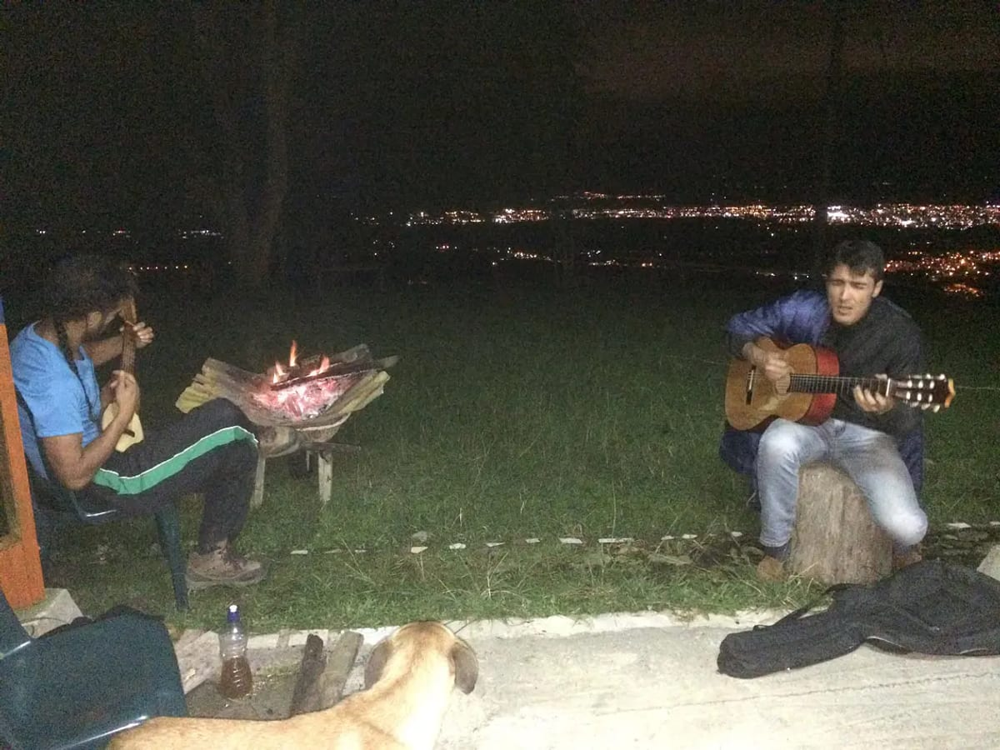

✈️ Aeropuerto de Pereira
~1 h 40 min en carro
El acceso aéreo más fácil al Eje Cafetero. Vuelos diarios desde Bogotá, Medellín, Cali y Miami.
Llegada internacionalEcoparque Peñas Blancas es una reserva natural en Calarcá donde la roca, el bosque y la leyenda del Cacique Calarcá se encuentran. Escalada, rappel, espeleología, senderismo y camping a 2.430 m sobre el nivel del mar, en plena cordillera del Eje Cafetero.
 Cordillera Central
Cordillera Central
Calarcá está perfectamente conectada. Si ya vienes al Quindío por café, Cocora o Salento, sumar un día en Peñas Blancas es la mejor decisión.
El acceso aéreo más fácil al Eje Cafetero. Vuelos diarios desde Bogotá, Medellín, Cali y Miami.
Llegada internacionalSi ya estás en Salento, una mañana en Peñas Blancas se acomoda perfecto a tu itinerario cafetero.
Day-trip idealLa capital del Quindío. Toma un Jeep Willys desde la Plaza de Mercado de Calarcá hasta La Virginia.
Más cercaUn fin de semana en el Eje Cafetero con Peñas Blancas vale el viaje. Reserva con tiempo.
Fin de semanaUn vistazo desde el dron al sendero, la peña y la vista de 360° del Quindío.

📹 Video del canal Mosquera Music · Ver en YouTube

Bosque
De niebla
Roca
Paredes 280 m
Cima
2.430 m s.n.m.En el Corregimiento de La Virginia, sobre las cumbres de Calarcá, las peñas blancas se levantan como un balcón natural sobre el Quindío. El Ecoparque protege esa montaña ancestral, hogar de la leyenda del Cacique Calarcá y de las culturas Quimbaya y Pijao.
Aquí la aventura va de la mano con la conservación: cada visita aporta al cuidado de un bosque donde ya hemos sembrado más de 20.000 árboles.
Desde una caminata tranquila por el bosque hasta una jornada completa de escalada y rappel sobre paredes de 80 metros.
Paredes naturales de hasta 280 metros totalmente verticales. Rutas para principiantes y avanzados, con instructor y equipo certificado.
Aventura · UIAADesciende paredes de hasta 80 metros bajo estándar internacional. Una experiencia controlada y segura, sin necesidad de experiencia previa.
Aventura · UIAARecorre cuevas profundas tras los pasos de la leyenda del Cacique Calarcá. Una expedición al corazón húmedo y silencioso de la montaña.
Aventura · CulturaRecorrido de 3,2 km entre bosque nativo, miradores y zonas de reforestación. Ideal para familias, parejas y observadores de aves.
NaturalezaEl bosque de niebla del Quindío es hogar de decenas de especies. Trae tus binoculares: con paciencia se asoman tucanes, colibríes y rapaces.
Naturaleza · BirdingMini tirolina de 40 metros sobre el bosque. Perfecta para niños y para quienes quieren probar la adrenalina sin tanta altura.
FamiliarFútbol 8, voleibol, juegos infantiles y pistas para deporte de observación. Espacios para celebrar en grupo en pleno aire libre.
Grupos · FamiliaTalleres y recorridos guiados para colegios y grupos: reforestación, fauna del Quindío y cultura Quimbaya/Pijao.
Colegios · GruposLa entrada al sendero ecológico es muy económica. Las actividades de aventura y el hospedaje se cotizan según el grupo — escríbenos y armamos tu plan ideal.
Sendero ecológico
Escalada · Rappel · Espeleología
Pernocta en la montaña
💬 Para tarifas actualizadas escríbenos por WhatsApp o llámanos al 310 396 7951 · 300 658 7163.
La montaña en la noche es otra cosa. Despierta con el canto de las aves y el olor del bosque húmedo.

Una cabaña amplia y acogedora, ideal para grupos, familias o un retiro tranquilo. Capacidad hasta 10 personas.

Amplio espacio con plataformas, drenajes, cocineta común y baterías sanitarias. Privacidad y silencio en plena naturaleza.

Cocina tradicional del Quindío con ingredientes frescos de la región. Almuerzos típicos, agua de panela y café cultivado en la zona.
“Antes de la llegada de los conquistadores, el cacique Calarcá escondió el oro de su pueblo en las cuevas y peñas blancas de la montaña. Quien camine estas rocas hoy, camina por la historia del pueblo Pijao y Quimbaya.”
— Tradición oral del Quindío
Una pequeña muestra del paisaje que te espera. Para fotos reales del parque, síguenos en @ecoparquepenasblancas.
El parque recibe visitantes de miércoles a lunes en horario diurno. Recomendamos llegar temprano para aprovechar las mejores horas de luz en el bosque.
Para escalada, rappel y espeleología es indispensable reservar con anticipación para coordinar guía y equipo.
💡 La mejor hora para fotos en las peñas y caminatas tranquilas es entre las 9:00 AM y las 11:30 AM.
Corregimiento de La Virginia, a 30–40 minutos del centro de Calarcá. En pleno corazón del Eje Cafetero, a un paso de Armenia, Salento y Filandia.
Calarcá, Quindío · Colombia. A 2.430 m s.n.m., sobre la cordillera Central, en pleno Paisaje Cultural Cafetero.
Abrir en Google MapsDistancias aproximadas
Visitantes de
Todo lo que necesitas saber antes de subir al ecoparque.
La entrada al sendero ecológico cuesta desde $7.000 por persona e incluye una bebida. Las actividades de aventura (escalada, rappel, espeleología, tirolina) y el hospedaje tienen tarifas adicionales que cotizamos por WhatsApp.
En el Corregimiento de La Virginia, municipio de Calarcá, Quindío. Está a unos 30–40 minutos del casco urbano de Calarcá por vía de montaña.
Toma un Jeep Willys en la Plaza de Mercado de Calarcá con destino al ecoparque. Un viaje expreso al parqueadero cuesta aproximadamente $30.000. También puedes coordinar transporte con nosotros.
No. Trabajamos con instructores y todo el equipo cumple norma UIAA internacional. Recibimos personas sin experiencia previa, familias y grupos. Hay restricciones de salud, peso y edad para algunas actividades — las confirmamos con el guía.
Zapatos cerrados con buen agarre, ropa larga y cómoda, hidratación, repelente, bloqueador solar, una muda extra y un abrigo ligero. La temperatura va de 12 °C a 20 °C. Si vas a acampar, trae carpa y sleeping.
Sí. Los niños deben venir acompañados de un adulto responsable; para algunas actividades pedimos registro civil. Las mascotas son bienvenidas con correa y carnet de vacunas vigente.
Sí. Restaurante con comida típica del Quindío (bajo reserva), cabaña para hasta 10 personas y zona de camping con cocineta, baterías sanitarias y duchas.
Para visitas guiadas y actividades de aventura el horario habitual es de miércoles a lunes, 9:00 AM a 3:00 PM. Recomendamos siempre confirmar disponibilidad por WhatsApp antes de subir.
El ecoparque es una reserva: no fumar, no consumir alcohol ni sustancias, no portar armas y empacar de regreso toda la basura que generes. Llevamos años sembrando bosque — ayúdanos a cuidarlo.
Cuenta la tradición Quimbaya y Pijao que el Cacique Calarcá escondió un tesoro en las cuevas y peñas blancas de la montaña antes de la llegada de los conquistadores. Recorrer las cuevas hoy es como entrar a esa historia ancestral.
Escríbenos por WhatsApp para reservar tu visita, coordinar actividades de aventura, hospedaje o un plan a la medida para tu grupo.


Sube a la montaña en 3 pasos
El parque queda en La Virginia, a unos 30–40 minutos del casco urbano de Calarcá. La vía es de montaña: con calma, llegas tranquilo.
Llega a Calarcá
Calarcá está a 10 minutos de Armenia. Si vienes en bus, baja en el terminal de Calarcá y dirígete a la Plaza de Mercado.
Toma transporte hacia La Virginia
En la Plaza de Mercado de Calarcá toma un Jeep Willys con destino al ecoparque. Un viaje expreso al parqueadero cuesta aproximadamente $30.000.
Coordina tu día
Antes de subir, escríbenos por WhatsApp para asegurar guía, equipo o hospedaje. La señal celular en la montaña es limitada.
Trae lo necesario
Zapatos cerrados, ropa larga, hidratación, repelente, bloqueador y un abrigo ligero. La temperatura va de 12 °C a 20 °C.